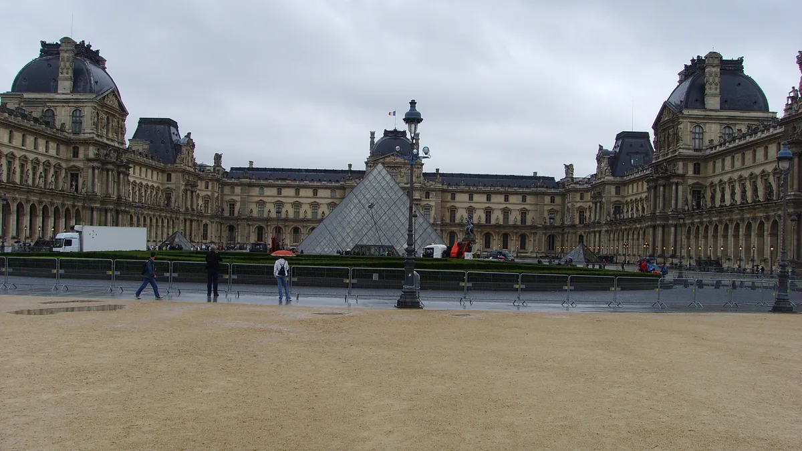

01
Museu do Louvre
Museu€ 32
quem não é do EEE; europeu paga € 22

Luctor · Public domain · via Wikimedia Commons
Valor da entrada
Fonte: site oficial (louvre.fr), consultado em 30/set/2026.
O Louvre tem dois preços, e a diferença é o seu passaporte.
€ 22 para cidadãos ou residentes do Espaço Econômico Europeu — os 27 da União Europeia mais Islândia, Liechtenstein e Noruega.
€ 32 para todos os outros, o que inclui o Brasil. São € 10 a mais, ou 45%.
A cobrança separada começou em 14 de janeiro de 2026, e o museu anunciou que espera arrecadar de 15 a 20 milhões de euros por ano com ela.
Não paga: menor de 18 anos, de qualquer nacionalidade, mediante documento com foto. E menor de 26 anos que seja cidadão ou residente do EEE — residente precisa de título de permanência de mais de 90 dias, com nome e foto.
Grupo guiado de fora do EEE paga € 28 por pessoa, em grupos de até 20.
O Louvre tem dois preços, e a diferença é o seu passaporte.
€ 22 para cidadãos ou residentes do Espaço Econômico Europeu — os 27 da União Europeia mais Islândia, Liechtenstein e Noruega.
€ 32 para todos os outros, o que inclui o Brasil. São € 10 a mais, ou 45%.
A cobrança separada começou em 14 de janeiro de 2026, e o museu anunciou que espera arrecadar de 15 a 20 milhões de euros por ano com ela.
Não paga: menor de 18 anos, de qualquer nacionalidade, mediante documento com foto. E menor de 26 anos que seja cidadão ou residente do EEE — residente precisa de título de permanência de mais de 90 dias, com nome e foto.
Grupo guiado de fora do EEE paga € 28 por pessoa, em grupos de até 20.
Quando é de graça
Primeira sexta-feira do mês, depois das 18h, para todo mundo — exceto em julho e agosto.
Mudou e o guia não acompanhou por anos o Louvre foi gratuito no primeiro domingo, de outubro a março. Não é mais. O Musée d’Orsay, do outro lado do rio, continua no primeiro domingo — os dois museus têm dias diferentes, e quem confia num roteiro velho perde os dois.
O museu recomenda reservar horário mesmo para entrada gratuita.
Mudou e o guia não acompanhou por anos o Louvre foi gratuito no primeiro domingo, de outubro a março. Não é mais. O Musée d’Orsay, do outro lado do rio, continua no primeiro domingo — os dois museus têm dias diferentes, e quem confia num roteiro velho perde os dois.
O museu recomenda reservar horário mesmo para entrada gratuita.
Dias em que não funciona
Fecha às terças.
Segunda, quinta, sábado e domingo: 9h às 18h.
Quarta e sexta: 9h às 21h.
Última entrada uma hora antes de fechar, e as salas começam a ser esvaziadas 30 minutos antes.
Fecha em 1º de janeiro, 1º de maio e 25 de dezembro. Nos demais feriados abre, a não ser que caiam numa terça.
Segunda, quinta, sábado e domingo: 9h às 18h.
Quarta e sexta: 9h às 21h.
Última entrada uma hora antes de fechar, e as salas começam a ser esvaziadas 30 minutos antes.
Fecha em 1º de janeiro, 1º de maio e 25 de dezembro. Nos demais feriados abre, a não ser que caiam numa terça.
Cuidado com bilhete falso
O próprio museu publica um alerta sobre sites espelho que se passam por oficiais e sobre venda de rua. Bilhete comprado assim pode ter a entrada recusada. A bilheteria oficial é o louvre.fr.
Onde fica